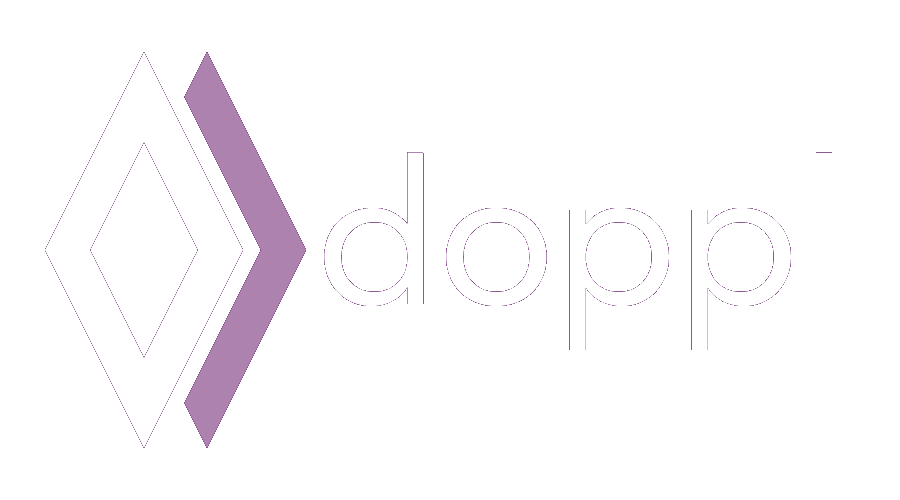

Technical Preview
This is a technical preview of a code-sharing library for mobile developers, based on J2objc, called Doppl. J2objc
converts Java code to Objective-C. Doppl is a set of build tools and libraries to facilitate building Android and iOS in parallel,
sharing as much logic as possible, but leaving UI's native.
Read more about Doppl here.
Update!!!
We are updating the Droidcon NYC app to use Android Architecture Components, Room, RxJava2, Retrofit2, and other modern libraries.
Droidcon NYC App
Notes on the preview
Docs soon to be improved (seriously). Follow sample apps for now, and reach out on
comm channels below for more direct assistance.
Party Clicker and
the Droidcon App.
Keep in touch
Join Slack Group
@doppllib
Mailing List
Blog
Other Docs
Until we have a better navigation higherarchy...